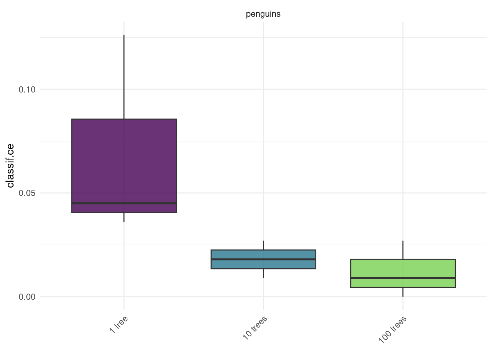
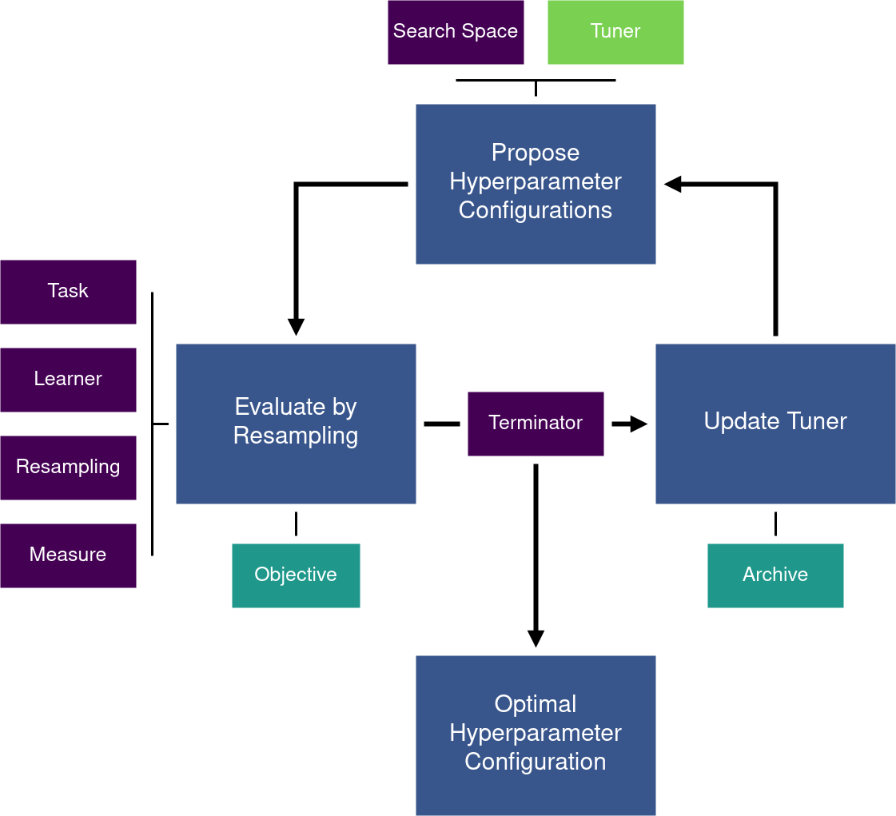
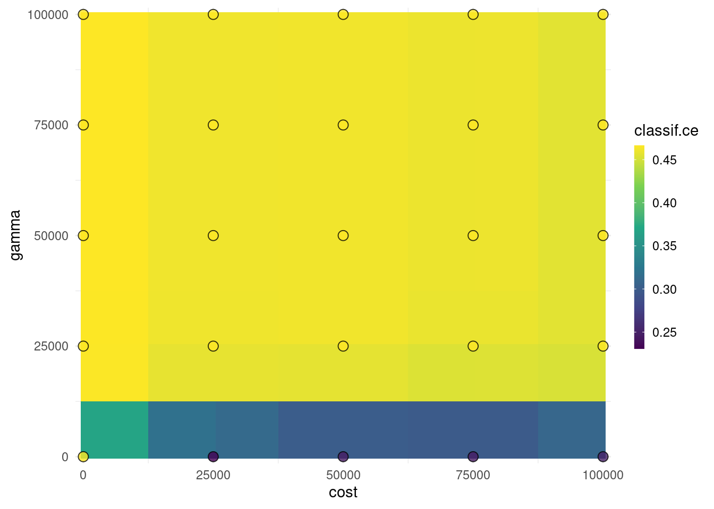
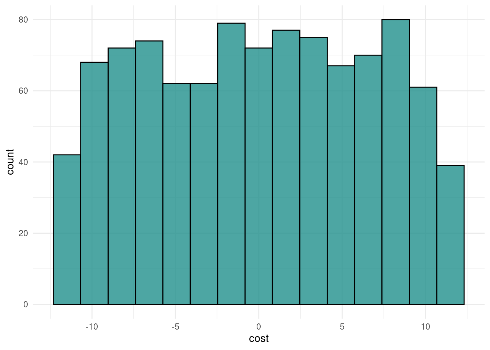
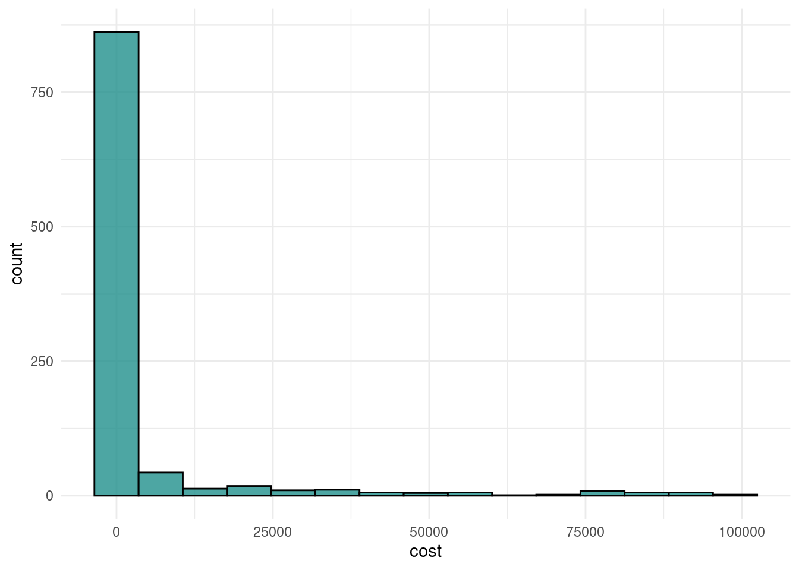
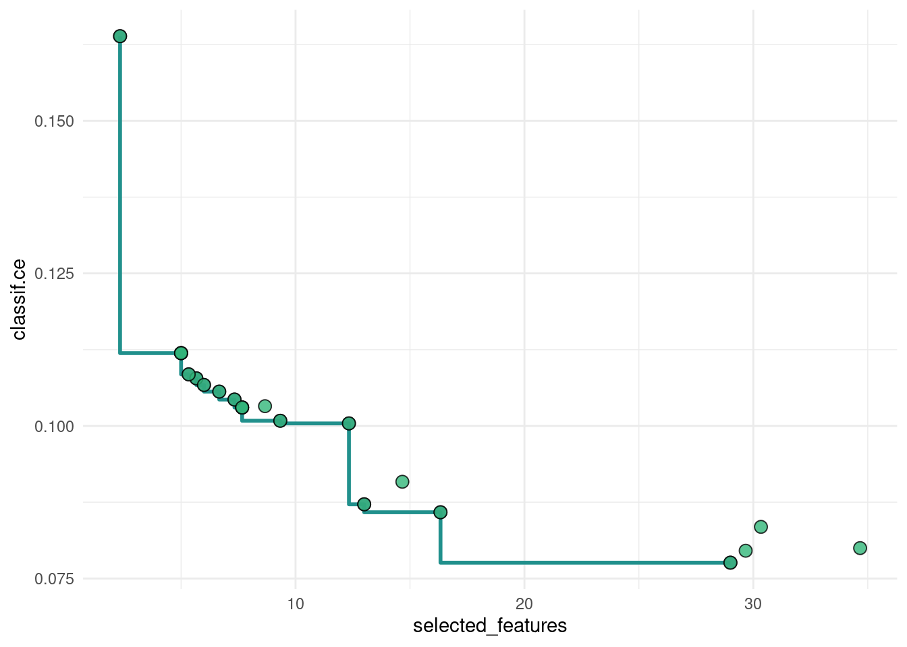

4 Hyperparameter Optimization
![]()
cost and gamma hyperparameters of a support vector machine on the sonar task. We introduce the tuning instance class that describes the tuning problem and the tuner class that wraps an optimization algorithm. After running the optimization, we show how to analyze the results and fit a final model. We also show how to run a multi-objective optimization with multiple measures. Then we move on to more advanced topics like search space transformations, fallback learners and encapsulation. Finally, we show how to use nested resampling to get an unbiased estimate of the performance of an optimized model.
Machine learning algorithms usually include parameters and hyperparameters. Parameters are what we might think of as model coefficients or weights, when fitting a model we are essentially just running algorithms that fit parameters. In contrast, hyperparameters, are configured by the user and determine how the model will fit its parameters. Examples include setting the number of trees in a random forest, penalty variables in SVMs, or the learning rate in a neural network. Building a neural network is sometimes referred to as an ‘art’ as there are so many hyperparameters to configure that strongly influence model performance, this is also true for other machine learning algorithms. So in this chapter, we will demonstrate how to make this into more of a science.
The goal of hyperparameter optimization (Section 4.1) or model tuning is to find the optimal configuration of hyperparameters of an ML algorithm for a given task. There is no closed-form mathematical representation (nor analytic gradient information) for model agnostic HPO, instead, we follow a numerical black-box optimization: an ML algorithm is configured with values chosen for one or more hyperparameters, this algorithm is then evaluated (optimally with a robust resampling method) and its performance measured, this is repeated with multiple configurations and the configuration with the best performance is selected. We could think of finding the optimal configuration in the same way as selecting a model from a benchmark experiment, where in this case each model uses the same underlying algorithm but with different hyperparameter configurations. For example, we could naively tune the number of trees in a random forest using basic mlr3 code:
bmr = benchmark(benchmark_grid(
tasks = tsk("penguins_simple"),
learners = list(
lrn("classif.ranger", num.trees = 1, id = "1 tree"),
lrn("classif.ranger", num.trees = 10, id = "10 trees"),
lrn("classif.ranger", num.trees = 100, id = "100 trees")),
resamplings = rsmp("cv", folds = 3)
))
autoplot(bmr)
Human trial-and-error (which is essentially what we are doing above), is time-consuming, often biased, error-prone, and computationally irreproducible. Instead, many sophisticated HPO methods (Section 4.1.4) (or ‘tuners’) have been developed over the last few decades for robust and efficient HPO. Most HPO methods are iterative and propose different configurations until some termination criterion is met, at which point the optimal configuration is then returned (Figure 4.2). Popular, modern examples are given by algorithms based on evolutionary algorithms or Bayesian optimization methods. Recent HPO methods often also make use of evaluating a configuration at multiple so-called fidelity levels, e.g., a neural network can be trained for an increasing number of epochs, gradient boosting can be performed for an increasing number of boosting steps and training data can always be subsampled to only include a smaller fraction of all available data. The general idea of multi-fidelity HPO methods is that the performance of a model obtained by using computationally cheap lower fidelity evaluations (few numbers of epochs or boosting steps, only using a small sample of all available data for training) is predictive of the performance of the model obtained using computationally expensive higher fidelity evaluations and this concept can be leveraged to make HPO more efficient (e.g., only continuing to evaluate those configurations on higher fidelities that appear to be promising). Another interesting direction of HPO is to optimize multiple metrics (Section 4.3) simultaneously, e.g., minimizing the generalization error along with the size of the model. This gives rise to multi-objective HPO. For more details on HPO in general, the reader is referred to Bischl et al. (2021) and Feurer and Hutter (2019).

4.1 Model Tuning
mlr3tuning is the hyperparameter optimization package of the mlr3 ecosystem. At the heart of the package (and indeed any optimization problem) are the R6 classes
-
TuningInstanceSingleCritandTuningInstanceMultiCrit, which are used to construct a tuning ‘instance’ which describes the optimization problem and stores the results; and -
Tunerwhich is used to get and set optimization algorithms.
In this section, we will cover these classes as well as other supporting functions and classes. Throughout this section, we will look at optimizing a support vector machine (SVM) on the sonar data set as a running example.
4.1.1 Learner and Search Space
We begin by constructing a support vector machine from the e1071 with a radial kernel and specify we want to tune this using "C-classification" (the alternative is "nu-classification", which has the same underlying algorithm but with a nu parameter to tune over [0,1] instead of cost over [0, \(\infty\))).
Learner hyperparameter information is stored in the $param_set field, including parameter name, class (e.g., discrete or numeric), levels it can be tuned over, tuning limits, and more.
id class lower upper nlevels
1: cachesize ParamDbl -Inf Inf Inf
2: class.weights ParamUty NA NA Inf
3: coef0 ParamDbl -Inf Inf Inf
4: cost ParamDbl 0 Inf Inf
5: cross ParamInt 0 Inf Inf
6: decision.values ParamLgl NA NA 2
7: degree ParamInt 1 Inf Inf
8: epsilon ParamDbl 0 Inf Inf
9: fitted ParamLgl NA NA 2
10: gamma ParamDbl 0 Inf Inf
11: kernel ParamFct NA NA 4
12: nu ParamDbl -Inf Inf Inf
13: scale ParamUty NA NA Inf
14: shrinking ParamLgl NA NA 2
15: tolerance ParamDbl 0 Inf Inf
16: type ParamFct NA NA 2Note that $param_set also displays non-tunable parameters. Detailed information about parameters can be found in the help pages of the underlying implementation, for this example see e1071::svm().
Given infinite resources, we could tune every single hyperparameter, but in reality that is not possible so instead only a subset of hyperparameters can be tuned. This subset is referred to as the search space or tuning space. In this example we will tune the regularization and influence hyperparameters, cost and gamma.
For numeric hyperparameters (we will explore others later) one must specify the bounds to tune over. We do this by constructing a learner and using to_tune() to set the lower and upper limits for the parameters we want to tune. This function allows us to construct a learner in the usual way but to leave the hyperparameters of interest to be unspecified within a set range. This is best demonstrated by example:
learner = lrn("classif.svm",
cost = to_tune(1e-5, 1e5),
gamma = to_tune(1e-5, 1e5),
type = "C-classification",
kernel = "radial"
)
learner<LearnerClassifSVM:classif.svm>
* Model: -
* Parameters: cost=<RangeTuneToken>, gamma=<RangeTuneToken>,
type=C-classification, kernel=radial
* Packages: mlr3, mlr3learners, e1071
* Predict Types: [response], prob
* Feature Types: logical, integer, numeric
* Properties: multiclass, twoclassHere we have constructed a classification SVM by setting the type to “C-classification”, the kernel to “radial”, and not fully specifying the cost and gamma hyperparameters but instead indicating that we will tune these parameters.
The cost and gamma hyperparameters are usually tuned on the logarithmic scale. You can find out more in Section 4.2.2.
Search spaces are usually chosen by experience. In some cases these can be quite complex, Section 9.4 describes how to construct these. Section 4.2.3 introduces the mlr3tuningspaces extension package which allows loading of search spaces that have been established in published scientific articles.
4.1.2 Terminator
Theoretically, a tuner could search an entire search space exhaustively, however practically this is not possible and mathematically this is impossible for continuous hyperparameters. Therefore a core part of configuring tuning is to specify when to terminate the algorithm, this is also known as specifying the tuning budget. mlr3tuning includes many methods to specify when to terminate an algorithm, which are known as Terminators. Available terminators are listed in Table 4.1.
| Terminator | Function call and default parameters |
|---|---|
| Number of Evaluations | trm("evals", n_evals = 500) |
| Run Time | trm("run_time", secs = 100) |
| Performance Level | trm("perf_reached", level = 0.1) |
| Stagnation | trm("stagnation", iters = 5, threshold = 1e-5) |
| None | trm("none") |
| Clock Time | trm("clock_time", stop_time = "2022-11-06 08:42:53 CET" |
| Combo | trm("combo", terminators = list(run_time_100, evals_200) |
The most commonly used terminators are those that stop the tuning after a certain time ("run_time") or the number of evaluations ("evals"). Choosing a runtime is often based on practical considerations and intuition. Using a time limit can be important on clusters so that the tuning is finished before the account budget is exhausted. The "perf_reached" terminator stops the tuning when a certain performance level is reached, which can be helpful if a certain performance is seen as sufficient for the practical use of the model. However, one needs to be careful using this terminator as if the level is set too optimistically, the tuning might never terminate. The "stagnation" terminator stops when no progress is made in a certain amount of iterations. Note, this could result in the optimization being terminated too early if the search space is too complex. We use "none" when tuners, such as Grid Search and Hyperband, control the termination themselves. Terminators can be freely combined with the "combo" terminator, this is explored in the exercises at the end of this chapter. A complete and always up-to-date list of terminators can be found on our website at https://mlr-org.com/terminators.html.
4.1.3 Tuning Instance with ti
A tuning instance can be constructed manually (Section 4.1.3) with the ti() function or automated (Section 4.1.6) with the tune() function. We cover the manual approach first as this allows finer control of tuning and a more nuanced discussion about the design and use of mlr3tuning. The ti function constructs a tuning instance which collects together the information required to optimise a model.
Now continuing our example, we will construct a single-objective tuning problem (i.e., tuning over one measure) by using the ti() function to create a TuningInstanceSingleCrit (note: supplying two measures to ti() would result in TuningInstanceMultiCrit (Section 4.3)). For this example we will use three-fold resampling and will optimise the classification error measure. Note that we use trm("none") as we are using an exhaustive grid search.
resampling = rsmp("cv", folds = 3)
measure = msr("classif.ce")
learner = lrn("classif.svm",
cost = to_tune(1e-5, 1e5),
gamma = to_tune(1e-5, 1e5),
kernel = "radial",
type = "C-classification"
)
instance = ti(
task = tsk("sonar"),
learner = learner,
resampling = rsmp("cv", folds = 3),
measures = msr("classif.ce"),
terminator = trm("none")
)
instance<TuningInstanceSingleCrit>
* State: Not optimized
* Objective: <ObjectiveTuning:classif.svm_on_sonar>
* Search Space:
id class lower upper nlevels
1: cost ParamDbl 1e-05 1e+05 Inf
2: gamma ParamDbl 1e-05 1e+05 Inf
* Terminator: <TerminatorNone>4.1.4 Tuner
After we created the tuning problem, we can look at how to tune. There are multiple Tuners in mlr3tuning, which implement different HPO algorithms.
| Tuner | Function call | Method |
|---|---|---|
| Random Search | tnr("random_search") |
Samples configurations from a uniform distribution randomly (Bergstra and Bengio 2012). |
| Grid Search | tnr("grid_search") |
Discretizes the range of each configuration and exhaustively evaluates each combination. |
| Iterative Racing | tnr("irace") |
Races down a random set of configurations and uses the surviving ones to initialize a new set of configurations which focus on a promising region of the search space (López-Ibáñez et al. 2016). |
| Bayesian Optimization | tnr("mbo") |
Iterative algorithms that make use of a continuously updated surrogate model built for the objective function. By optimizing a (comparably cheap to evaluate) acquisition function defined on the surrogate prediction, the next candidate is chosen for evaluation, resulting in good sample efficiency. |
| Hyperband | tnr("hyperband") |
Multi-fidelity algorithm that speeds up a random search with adaptive resource allocation and early stopping (Li et al. 2017). |
| Covariance Matrix Adaptation Evolution Strategy | tnr("cmaes") |
Evolution strategy algorithm with sampling from a multivariate Gaussian who is updated with the success of the previous population (Hansen and Auger 2011). |
| Generalized Simulated Annealing | tnr("gensa") |
Probabilistic algorithm for numeric search spaces (Xiang et al. 2013; Tsallis and Stariolo 1996). |
| Nonlinear Optimization | tnr("nloptr") |
Several nonlinear optimization algorithms for numeric search spaces. |
When selecting algorithms, grid search and random search are the most basic and are often selected first in initial experiments. They are ‘naive’ algorithms in that they try new configurations whilst ignoring performance from previous attempts. In contrast, more advanced algorithms such as Iterative Racing and CMA-ES learn from the previously evaluated configurations to find good configurations more quickly. Some advanced algorithms are included in extension packages, for example the package mlr3mbo implements Bayesian optimization (also called Model-Based Optimization), and mlr3hyperband implements algorithms of the hyperband family. A complete and up-to-date list of tuners can be found on the website.
For our SVM example, we will use a simple grid search with a resolution of 5, which is the distinct values to try per hyperparameter. For example for a search space \(\{1, 2, 3, 4, 5, 6\}\) then a grid search with resolution 3 would pick three values evenly apart in this search space, i.e., \(\{2, 4, 6\}\). The batch_size controls how many configurations are evaluated at the same time (see Section 9.1).
<TunerGridSearch>: Grid Search
* Parameters: resolution=5, batch_size=5
* Parameter classes: ParamLgl, ParamInt, ParamDbl, ParamFct
* Properties: dependencies, single-crit, multi-crit
* Packages: mlr3tuningIn our example we are tuning over two numeric parameters, TunerGridSearch will create an equidistant grid between the respective upper and lower bounds. This means our two-dimensional grid of resolution 5 consists of \(5^2 = 25\) configurations. Each configuration is a distinct set of hyperparameter values that is used to construct a model from the chosen learner, which is fit to the chosen task (Figure 4.2).
All configurations will be tried by the tuner (in random order) until either all configurations are evaluated or the terminator (Section 4.1.2) signals that the budget is exhausted.
Just like learners, tuners also have parameters, known as control parameters, which (as the name suggests) controls the behavior of the tuners. Unlike learners, default values for control parameters usually give good results and these rarely need to be changed. Control parameters are stored in the $param_set field.
4.1.5 Trigger the Tuning
Now we have all our components, we are ready to start tuning! To do this we simply pass the constructed TuningInstanceSingleCrit to the $optimize() method of the initialized Tuner. The tuner then proceeds with the HPO loop we discussed at the beginning of the chapter (Figure 4.2).
cost gamma learner_param_vals x_domain classif.ce
1: 25000 1e-05 <list[4]> <list[2]> 0.2358178The optimizer returns the best hyperparameter configuration and the corresponding measured performance. This information is also stored in instance$result.
The column x_domain contains transformed values and learner_param_vals optional constants (none in this example). See section Section 4.2.2 for more information.
4.1.6 Quick Tuning with tune
In the previous section, we looked at creating a tuning instance manually using ti(), which offers more control over the tuning process. However, you can also simplify this (albeit with slightly less control) using the tune() sugar function. Internally this creates a TuningInstanceSingleCrit, starts the tuning and returns the result with the instance.
learner = lrn("classif.svm",
cost = to_tune(1e-5, 1e5),
gamma = to_tune(1e-5, 1e5),
kernel = "radial",
type = "C-classification"
)
instance = tune(
method = tnr("grid_search", resolution = 5, batch_size = 5),
task = tsk("sonar"),
learner = learner,
resampling = rsmp("cv", folds = 3),
measures = msr("classif.ce")
)
instance$result cost gamma learner_param_vals x_domain classif.ce
1: 25000 1e-05 <list[4]> <list[2]> 0.23091794.1.7 Analyzing the Result
Whether you use ti or tune the output is the same and the ‘archive’ lists all evaluated hyperparameter configurations:
cost gamma classif.ce
1: 5.0e+04 5.0e+04 0.4661836
2: 5.0e+04 1.0e+05 0.4661836
3: 7.5e+04 7.5e+04 0.4661836
4: 1.0e+05 1.0e-05 0.2499655
5: 1.0e+05 7.5e+04 0.4661836
---
21: 1.0e-05 7.5e+04 0.4661836
22: 1.0e-05 1.0e+05 0.4661836
23: 2.5e+04 2.5e+04 0.4661836
24: 1.0e+05 2.5e+04 0.4661836
25: 1.0e+05 5.0e+04 0.4661836Each row of the archive is a different evaluated configuration (there are 25 rows in total in the full data.table). The columns here show the tested configurations, the measure we optimize, the completed configuration time stamp, and the total train and predict times. If we only specify a single-objective criterium then the instance will return the configuration that optimizes this measure however we can manually inspect the archive to determine other important features. For example, how long did the model take to run? Were there any errors in running?
timestamp runtime_learners errors warnings
1: 2023-02-27 19:32:38 0.059 0 0
2: 2023-02-27 19:32:38 0.063 0 0
3: 2023-02-27 19:32:38 0.069 0 0
4: 2023-02-27 19:32:38 0.052 0 0
5: 2023-02-27 19:32:38 0.067 0 0
---
21: 2023-02-27 19:32:41 0.060 0 0
22: 2023-02-27 19:32:41 0.066 0 0
23: 2023-02-27 19:32:41 0.059 0 0
24: 2023-02-27 19:32:41 0.067 0 0
25: 2023-02-27 19:32:41 0.059 0 0Now we see not only was our optimal configuration the best performing with respect to classification error, but also it had the fastest runtime.
Another powerful feature of the instance is that we can score the internal ResampleResults on a different performance measure, for example looking at false negative rate (FNR) and false positive rate (FPR) as well as classification error:
as.data.table(instance$archive,
measures = msrs(c("classif.fpr", "classif.fnr")))[,
list(cost, gamma, classif.ce, classif.fpr, classif.fnr)] cost gamma classif.ce classif.fpr classif.fnr
1: 5.0e+04 5.0e+04 0.4661836 1.0000000 0.000000
2: 5.0e+04 1.0e+05 0.4661836 1.0000000 0.000000
3: 7.5e+04 7.5e+04 0.4661836 1.0000000 0.000000
4: 1.0e+05 1.0e-05 0.2499655 0.2628968 0.232703
5: 1.0e+05 7.5e+04 0.4661836 1.0000000 0.000000
---
21: 1.0e-05 7.5e+04 0.4661836 1.0000000 0.000000
22: 1.0e-05 1.0e+05 0.4661836 1.0000000 0.000000
23: 2.5e+04 2.5e+04 0.4661836 1.0000000 0.000000
24: 1.0e+05 2.5e+04 0.4661836 1.0000000 0.000000
25: 1.0e+05 5.0e+04 0.4661836 1.0000000 0.000000Now we see our model is also the best performing with respect to FPR and FNR!
You can view all the resamplings in a BenchmarkResult object with instance$archive$benchmark_result.
Finally, for more visually appealing results you can use mlr3viz (Figure 4.3).

cost values and gamma values around exp(-5) achieve the best performance.4.1.8 Using a tuned model
Once the learner has been tuned we can start to use it like any other model in the mlr3 universe. To do this we simply construct a new learner with the same underlying algorithm and set the learner hyperparameters with the optimal configurations:
Now we can train the learner on the full dataset and we are ready to make predictions. The trained model can then be used to predict new, external data:
Call:
svm.default(x = data, y = task$truth(), type = "C-classification",
kernel = "radial", gamma = 1e-05, cost = 25000.0000075, probability = (self$predict_type ==
"prob"))
Parameters:
SVM-Type: C-classification
SVM-Kernel: radial
cost: 25000
Number of Support Vectors: 89A common mistake when tuning is to report the performance estimated on the resampling sets on which the tuning was performed (instance$result$classif.ce) as the model’s performance. However, doing so would lead to bias and therefore nested resampling is required (Section 4.5). Therefore when tuning as above ensure that you do not make any statements about model performance without testing the model on more unseen data. We will come back to this in more detail in Section 4.4.
4.2 Advanced Tuning
4.2.1 Encapsulation and Fallback Learner
So far, we have only looked at the case where no issues occur. However, it often happens that learners with certain configurations do not converge, run out of memory, or terminate with an error. We can protect the tuning process from failing learners with encapsulation. The encapsulation separates the tuning from the training of the individual learner. The encapsulation method is set in the learner.
The encapsulation can be set individually for training and predicting. There are currently two options for encapsulating a learner. The evaluate package and the callr package. The callr package comes with more overhead because the encapsulation spawns a separate R process. Both packages allow setting a timeout which is useful when a learner does not converge. We set a timeout of 30 seconds.
With encapsulation, exceptions and timeouts do not stop the tuning. Instead, the error message is recorded and a fallback learner is fitted.
Fallback learners allow scoring a result when no model was fitted during training. A common approach is to predict a weak baseline e.g. predicting the mean of the data or just the majority class. See ?sec-fallback-learner for more detailed information.
The featureless learner predicts the most frequent label.
Errors and warnings that occurred during tuning are stored in the archive.
cost gamma classif.ce errors warnings
1: 5.0e+04 5.0e+04 0.4661836 0 0
2: 5.0e+04 1.0e+05 0.4661836 0 0
3: 7.5e+04 7.5e+04 0.4661836 0 0
4: 1.0e+05 1.0e-05 0.2499655 0 0
5: 1.0e+05 7.5e+04 0.4661836 0 0
---
21: 1.0e-05 7.5e+04 0.4661836 0 0
22: 1.0e-05 1.0e+05 0.4661836 0 0
23: 2.5e+04 2.5e+04 0.4661836 0 0
24: 1.0e+05 2.5e+04 0.4661836 0 0
25: 1.0e+05 5.0e+04 0.4661836 0 04.2.2 Advanced Search Spaces
Usually, the cost and gamma hyperparameters are tuned on the logarithmic scale which means the optimization algorithm searches in \([log(1e-5), log(1e5)]\) but transforms the selected configuration with exp() before passing to the learner. Using the log transformation emphasizes smaller values but can also result in large values. The code below demonstrates this more clearly. The histograms show how the algorithm searches within a narrow range but exponentiating then results in the majority of points being relatively small but a few being very large.

cost values sampled by the optimization algorithm.
exp(cost) values seen by the learner.cost values.To add the exp() transformation to a hyperparameter, we pass logscale = TRUE to to_tune().
learner = lrn("classif.svm",
cost = to_tune(1e-5, 1e5, logscale = TRUE),
gamma = to_tune(1e-5, 1e5, logscale = TRUE),
kernel = "radial",
type = "C-classification"
)
instance = tune(
method = tnr("grid_search", resolution = 5, batch_size = 5),
task = tsk("sonar"),
learner = learner,
resampling = rsmp("cv", folds = 3),
measures = msr("classif.ce")
)
instance$result cost gamma learner_param_vals x_domain classif.ce
1: 5.756463 -5.756463 <list[4]> <list[2]> 0.2014493The column x_domain contains the hyperparameter values after the transformation i.e. exp(5.76) and exp(-5.76):
4.2.3 Search Spaces Collection
Selected search spaces can require a lot of background knowledge or expertise. The package mlr3tuningspaces tries to make HPO more accessible by providing implementations of published search spaces for many popular machine learning algorithms. These search spaces should be applicable to a wide range of data sets, however, they may need to be adapted in specific situations. The search spaces are stored in the dictionary mlr_tuning_spaces.
key label learner
1: classif.glmnet.default Classification GLM with Default classif.glmnet
2: classif.glmnet.rbv2 Classification GLM with RandomBot classif.glmnet
3: classif.kknn.default Classification KKNN with Default classif.kknn
4: classif.kknn.rbv2 Classification KKNN with RandomBot classif.kknn
5: classif.ranger.default Classification Ranger with Default classif.ranger
---
20: regr.rpart.rbv2 Regression Rpart with RandomBot regr.rpart
21: regr.svm.default Regression SVM with Default regr.svm
22: regr.svm.rbv2 Regression SVM with RandomBot regr.svm
23: regr.xgboost.default Regression XGBoost with Default regr.xgboost
24: regr.xgboost.rbv2 Regression XGBoost with RandomBot regr.xgboost
1 variable not shown: [n_values]The tuning spaces are named according to the scheme {learner-id}.{publication}. The sugar function lts() is used to retrieve a TuningSpace.
<TuningSpace:classif.rpart.default>: Classification Rpart with Default
id lower upper levels logscale
1: minsplit 2e+00 128.0 TRUE
2: minbucket 1e+00 64.0 TRUE
3: cp 1e-04 0.1 TRUEA tuning space can be passed to ti() as the search_space.
instance = ti(
task = tsk("sonar"),
learner = lrn("classif.rpart"),
resampling = rsmp("cv", folds = 3),
measures = msr("classif.ce"),
terminator = trm("evals", n_evals = 20),
search_space = lts("classif.rpart.rbv2")
)
instance<TuningInstanceSingleCrit>
* State: Not optimized
* Objective: <ObjectiveTuning:classif.rpart_on_sonar>
* Search Space:
id class lower upper nlevels
1: cp ParamDbl -9.21034 0 Inf
2: maxdepth ParamInt 1.00000 30 30
3: minbucket ParamInt 1.00000 100 100
4: minsplit ParamInt 1.00000 100 100
* Terminator: <TerminatorEvals>Alternatively, we can explicitly set the search space of a learner with TuneTokens
$minsplit
Tuning over:
range [2, 128] (log scale)
$minbucket
Tuning over:
range [1, 64] (log scale)
$cp
Tuning over:
range [1e-04, 0.1] (log scale)<LearnerClassifRpart:classif.rpart>: Classification Tree
* Model: -
* Parameters: xval=0, minsplit=<RangeTuneToken>,
minbucket=<RangeTuneToken>, cp=<RangeTuneToken>
* Packages: mlr3, rpart
* Predict Types: [response], prob
* Feature Types: logical, integer, numeric, factor, ordered
* Properties: importance, missings, multiclass, selected_features,
twoclass, weightsWhen passing a learner to lts(), the default search space from the Bischl et al. (2021) article is applied.
<LearnerClassifRpart:classif.rpart>: Classification Tree
* Model: -
* Parameters: xval=0, minsplit=<RangeTuneToken>,
minbucket=<RangeTuneToken>, cp=<RangeTuneToken>
* Packages: mlr3, rpart
* Predict Types: [response], prob
* Feature Types: logical, integer, numeric, factor, ordered
* Properties: importance, missings, multiclass, selected_features,
twoclass, weightsIt is possible to simply overwrite a predefined tuning space in construction, for example here we change the range of the nrounds hyperparameter in XGBoost:
<TuningSpace:classif.xgboost.rbv2>: Classification XGBoost with RandomBot
id lower upper levels logscale
1: booster NA NA gblinear,gbtree,dart FALSE
2: nrounds 1e+00 1024 FALSE
3: eta 1e-04 1 TRUE
4: gamma 1e-05 7 TRUE
5: lambda 1e-04 1000 TRUE
6: alpha 1e-04 1000 TRUE
7: subsample 1e-01 1 FALSE
8: max_depth 1e+00 15 FALSE
9: min_child_weight 1e+00 100 TRUE
10: colsample_bytree 1e-02 1 FALSE
11: colsample_bylevel 1e-02 1 FALSE
12: rate_drop 0e+00 1 FALSE
13: skip_drop 0e+00 1 FALSE4.3 Multi-Objective Tuning
So far we have considered optimizing a model with respect to one metric but multi-metric, or multi-objective optimization is also possible. A simple example of multi-objective optimization might be optimizing a classifier to minimize false positive and false negative predictions. In a more complex example, consider the problem of deploying a classifier in a healthcare setting, there is clearly an ethical argument to tune the model to make the best possible predictions, however in machine learning this can often lead to models that are harder to interpret (think about deep neural networks!). In this case, we may be interested in minimizing both classification error (for example) and complexity.
In general, when optimizing multiple metrics, these will be in competition (if they were not we would only need to optimize with respect to one of them!) and so no single configuration exists that optimizes all metrics. Focus is therefore given to the concept of Pareto optimality. One hyperparameter configuration is said to Pareto-dominate another one if the resulting model is equal or better in all metrics and strictly better in at least one metric. All configurations that are not Pareto-dominated are referred to as Pareto efficient and the set of all these configurations is referred to as the Pareto front (Figure 4.5).
The goal of multi-objective HPO is to approximate the true, unknown Pareto front. More methodological details on multi-objective HPO can be found in Karl et al. (2022).
We will now demonstrate multi-objective HPO by tuning a decision tree on the Spam data set with respect to the classification error, as a measure of model performance, and the number of selected features, as a measure of model complexity (in a decision tree the number of selected features is straightforward to obtain by simply counting the number of unique splitting variables). We will tune
- The complexity hyperparameter
cpthat controls when the learner considers introducing another branch. - The
minsplithyperparameter that controls how many observations must be present in a leaf for another split to be attempted. - The
maxdepthhyperparameter that limits the depth of the tree.
Note that as we tune with respect to multiple measures, the function ti creates a TuningInstanceMultiCrit instead of a TuningInstanceSingleCrit.
instance = ti(
task = tsk("spam"),
learner = learner,
resampling = rsmp("cv", folds = 3),
measures = measures,
terminator = trm("evals", n_evals = 20),
store_models = TRUE # required to inspect selected_features
)
instance<TuningInstanceMultiCrit>
* State: Not optimized
* Objective: <ObjectiveTuning:classif.rpart_on_spam>
* Search Space:
id class lower upper nlevels
1: cp ParamDbl -9.2103404 -2.302585 Inf
2: minsplit ParamDbl 0.6931472 4.859812 Inf
3: maxdepth ParamInt 1.0000000 30.000000 30
* Terminator: <TerminatorEvals>As before we will then select and run a tuning algorithm, here we use random search:
Finally, we inspect the best-performing configurations, i.e., the Pareto set. And then inspect the estimated Pareto set and visualize the estimated Pareto front:
cp minsplit maxdepth classif.ce selected_features
1: -4.897655 3.338026 17 0.10302293 7.666667
2: -7.051424 3.896918 12 0.10041637 12.333333
3: -4.245193 1.541127 8 0.10780375 5.666667
4: -2.774911 3.148014 30 0.16387611 2.333333
5: -4.807622 1.987267 11 0.10432672 7.333333
6: -4.853549 4.375677 19 0.10671726 6.000000
7: -3.739909 1.772185 26 0.11193239 5.000000
8: -4.937744 1.286328 29 0.10302293 7.666667
9: -4.553218 2.750349 22 0.10563050 6.666667
10: -3.714380 2.555973 25 0.11193239 5.000000
11: -5.076189 2.735166 11 0.10085053 9.333333
12: -4.519566 4.470367 30 0.10845564 5.333333
13: -5.445322 1.663845 23 0.08715871 13.000000
14: -6.465093 1.536021 16 0.07759311 29.000000
15: -6.528747 2.155507 6 0.08585422 16.333333
4.4 Automated Tuning with AutoTuner
One of the most powerful classes in mlr3 is the AutoTuner. The AutoTuner wraps a learner and augments it with an automatic tuning process for a given set of hyperparameters – this allows transparent tuning of any learner, without the need to extract information on the best hyperparameter settings at the end. As the AutoTuner itself inherits from the Learner base class, it can be used like any other learner!
Let us see this in practice. We will run the exact same example as above but this time using the AutoTuner for automated tuning:
learner = lrn("classif.svm",
cost = to_tune(1e-5, 1e5, logscale = TRUE),
gamma = to_tune(1e-5, 1e5, logscale = TRUE),
kernel = "radial",
type = "C-classification"
)
at = auto_tuner(
method = tnr("grid_search", resolution = 5, batch_size = 5),
learner = learner,
resampling = rsmp("cv", folds = 3),
measure = msr("classif.ce")
)
at<AutoTuner:classif.svm.tuned>
* Model: list
* Search Space:
<ParamSet>
id class lower upper nlevels default value
1: cost ParamDbl -11.51293 11.51293 Inf <NoDefault[3]>
2: gamma ParamDbl -11.51293 11.51293 Inf <NoDefault[3]>
Trafo is set.
* Packages: mlr3, mlr3tuning, mlr3learners, e1071
* Predict Type: response
* Feature Types: logical, integer, numeric
* Properties: multiclass, twoclassWe can now use this like any other learner, calling the $train() and $predict() methods. The key difference to a normal learner, is that calling $train() also tunes the model.
task = tsk("sonar")
split = partition(task)
at$train(task, row_ids = split$train)
at$predict(task, row_ids = split$test)$score()classif.ce
0.2608696 We could also pass the AutoTuner to resample() and benchmark(), which would result in a nested resampling (Section 4.5), discussed next.
4.5 Nested Resampling
Hyperparameter optimization generally requires an additional layer or resampling to prevent bias in tuning. If the same data is used for determining the optimal configuration and the evaluation of the resulting model itself, the actual performance estimate of the model might be severely biased (Simon 2007). This is analogous to optimism of the training error described in (James et al. 2014), which occurs when training error is taken as an estimate of out-of-sample performance. This bias is represented in Figure 4.6 which shows an algorithm being tuned on data that has been split intro training and testing data, and then the same data is used to estimate the model performance after selecting the best configuration after HPO.
%%{init: { 'flowchart': {'rankSpacing': 25}}}%%
flowchart LR
search[(Search Space)]
opt[(Optimal<br>configuration)]
train[(Train)]
test[(Test)]
alg[/Algorithm/]
search --> alg
alg --> train
alg --> train
train --> test
train --> test
test --> opt
test --> perf(Performance)
opt --> alg
linkStyle 1,3,6,7 stroke-width:2px, stroke:red;
Train dataset and then the optimal configuration is selected by evaluation on the Test data. The model’s performance is then evaluated with the optimal configuration on the same data.Nested resampling separates model optimization from the process of estimating the performance of the model by adding an additional layer of resampling, i.e., whilst model performance is estimated using a resampling method in the ‘usual way’, tuning is then performed by resampling the resampled data (Figure 4.7). For more details and a formal introduction to nested resampling the reader is referred to Bischl et al. (2021).
A common confusion is how and when to use nested resampling. In the rest of this section we will answer the ‘how’ question but first the ‘when’. A common mistake is to confuse nested resampling for model evaluation and comparison, with tuning for model deployment. To put it differently, nested resampling is a statistical procedure to estimate the predictive performance of the model trained on the full dataset, it is not a procedure to select optimal hyperparameters. Nested resampling produces many hyperparameter configurations which should not be used to construct a final model (Simon 2007).

In words this process runs as follows:
- Outer resampling – Instantiate 3-fold cross-validation to create different testing and training data sets.
- Inner resampling – Within the training data instantiate 4-fold cross-validation to create different inner testing and training data sets.
- HPO – Tune the hyperparameters using the inner data splits (blue and gray blocks).
- Training – Fit the learner on the outer training data set using the optimal hyperparameter configuration obtained from the inner resampling (dark green blocks).
- Evaluation – Evaluate the performance of the learner on the outer testing data (light green blocks).
- Cross-validation – Repeat (2)-(5) for each of the three folds.
- Aggregation – Take the sample mean of the three performance values for an unbiased performance estimate.
That is enough theory for now, let us take a look at how this works in mlr3.
4.5.1 Nested Resampling with AutoTuner
Nested resampling in mlr3 becomes quite simple with the AutoTuner (Section 4.4). We simply specify the inner-resampling and tuning setup with the AutoTuner and then pass this to resample() or benchmark(). Continuing with our previous example we will use the auto-tuner to resample a support vector classifier with 3-fold cross-validation in the outer-resampling and 4-fold cross-validation in the inner resampling.
learner = lrn("classif.svm",
cost = to_tune(1e-5, 1e5, logscale = TRUE),
gamma = to_tune(1e-5, 1e5, logscale = TRUE),
kernel = "radial",
type = "C-classification"
)
at = auto_tuner(
method = tnr("grid_search", resolution = 5, batch_size = 5),
learner = learner,
resampling = rsmp("cv", folds = 4),
measure = msr("classif.ce"),
term_evals = 20,
)
task = tsk("sonar")
outer_resampling = rsmp("cv", folds = 3)
rr = resample(task, at, outer_resampling, store_models = TRUE)
rr<ResampleResult> of 3 iterations
* Task: sonar
* Learner: classif.svm.tuned
* Warnings: 0 in 0 iterations
* Errors: 0 in 0 iterationsNote we set store_models = TRUE so that the AutoTuner models are stored to investigate the inner tuning. In this example, we utilized the same resampling strategy (K-fold cross-validation) but the mlr3 infrastructure is not limited to this, you can freely combine different inner and outer resampling strategies as you choose. You can also mix-and-match parallelization methods for controlling the process (Section 9.1.4).
There are some special functions for nested resampling available in addition to the methods described in Section 3.2.
The extract_inner_tuning_results() and extract_inner_tuning_archives() functions return the optimal configurations (across all outer folds) and full tuning archives respectively.
iteration cost gamma classif.ce
1: 1 11.512925 -5.756463 0.1663866
2: 2 5.756463 -5.756463 0.2090336
3: 3 5.756463 -5.756463 0.1941176 iteration cost gamma classif.ce
1: 1 -11.512925 -11.512925 0.4567227
2: 1 -11.512925 5.756463 0.4567227
3: 1 -5.756463 -11.512925 0.4567227
4: 1 0.000000 5.756463 0.4567227
5: 1 5.756463 -11.512925 0.2747899
---
56: 3 0.000000 -11.512925 0.4678571
57: 3 0.000000 -5.756463 0.2151261
58: 3 0.000000 5.756463 0.4678571
59: 3 5.756463 0.000000 0.4678571
60: 3 11.512925 -5.756463 0.1941176From the optimal results, we observe a trend toward larger cost and smaller gamma values. However, as we discussed earlier, these values should not be used to fit a final model as the selected hyperparameters might differ greatly between the resampling iterations. On the one hand, this could be due to the optimization algorithm used, for example, with simple algorithms like random search, we do not expect stability of hyperparameters. On the other hand, more advanced methods like irace converge to an optimal hyperparameter configuration. Another reason for instability in hyperparameters could be due to small data sets and/or a low number of resampling iterations (i.e., the usual small data high variance problem).
4.5.2 Performance comparison
Finally, we will compare the predictive performances estimated on the outer resampling to the inner resampling to gain an understanding of model overfitting and general performance.
iteration cost gamma classif.ce
1: 1 11.512925 -5.756463 0.1663866
2: 2 5.756463 -5.756463 0.2090336
3: 3 5.756463 -5.756463 0.1941176 iteration classif.ce
1: 1 0.1285714
2: 2 0.1014493
3: 3 0.1884058Significantly lower predictive performances on the outer resampling indicate that the models with the optimized hyperparameters overfit the data.
It is therefore important to ensure that the performance of a tuned model is always reported as the aggregated performance of all outer resampling iterations, which is an unbiased estimate of future model performance. Note here we use the term unbiased to refer only to the statistical procedure of the performance estimation. The underlying prediction of the model could still be biased e.g. due to a bias in the data set.
As a final note, nested resampling is computationally expensive, as a simple example using five outer folds and three inner folds with a grid search of resolution 5 used to tune 2 parameters, results in 535*5 = 375 iterations of model training/testing. In practice, you may often see closer to three folds used in inner resampling or even holdout, or if you have the resources then we recommend parallelization (Section 9.1).
4.6 Conclusion
In this chapter, we learned how to optimize a model using tuning instances, about different tuners and terminators, how to make use of the automated methods for quicker implementation in larger experiments, and the importance of nested resampling. The most important functions and classes we learned about are in Table 4.3 alongside their R6 classes. If you are interested in learning more about the underlying R6 classes to gain finer control of these methods, then take a look at the online API.
| S3 function | R6 Class | Summary |
|---|---|---|
tnr() |
Tuner |
Determines an optimisation algorithm |
trm() |
Terminator |
Controls when to terminate the tuning algorithm |
ti() |
TuningInstanceSingleCrit or TuningInstanceMultiCrit
|
Stores tuning settings and save results |
paradox::to_tune() |
paradox::TuneToken |
Sets which parameters in a learner to tune and over what search space |
auto_tuner() |
AutoTuner |
Automates the tuning process |
extract_inner_tuning_results() |
- | Extracts inner results from nested resampling |
extract_inner_tuning_archives() |
- | Extracts inner archives from nested resampling |
Resources
The mlr3tuning cheatsheet1 summarizes the most important functions of mlr3tuning and the mlr3 gallery2 features a collection of case studies and demonstrations about optimization, most notably learn how to:
- Apply advanced methods in the practical tuning series3.
- Optimize an rpart classification tree with only a few lines of code4.
- Tune an XGBoost model with early stopping5.
- Quickly load and tune over search spaces that have been published in literature with mlr3tuningspaces6.
3 https://mlr-org.com/gallery.html#category:practical_tuning_series
4 https://mlr-org.com/gallery/2022-11-10-hyperparameter-optimization-on-the-palmer-penguins/
5 https://mlr-org.com/gallery/2022-11-04-early-stopping-with-xgboost/
6 https://mlr-org.com/gallery/2021-07-06-introduction-to-mlr3tuningspaces/
4.7 Exercises
- Tune the
mtry,sample.fraction,num.treeshyperparameters of a random forest model (regr.ranger) on theMotor Trenddata set (mtcars). Use a simple random search with 50 evaluations and select a suitable batch size. Evaluate with a 3-fold cross-validation and the root mean squared error. - Evaluate the performance of the model created in Question 1 with nested resampling. Use a holdout validation for the inner resampling and a 3-fold cross-validation for the outer resampling. Print the unbiased performance estimate of the model.
- Tune and benchmark an XGBoost model against a logistic regression and determine which has the best Brier score. Use mlr3tuningspaces and nested resampling.